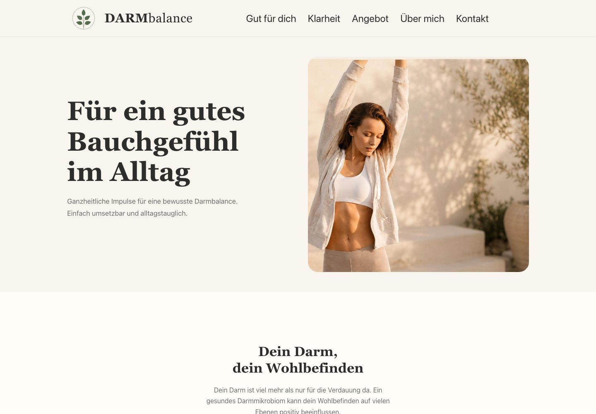
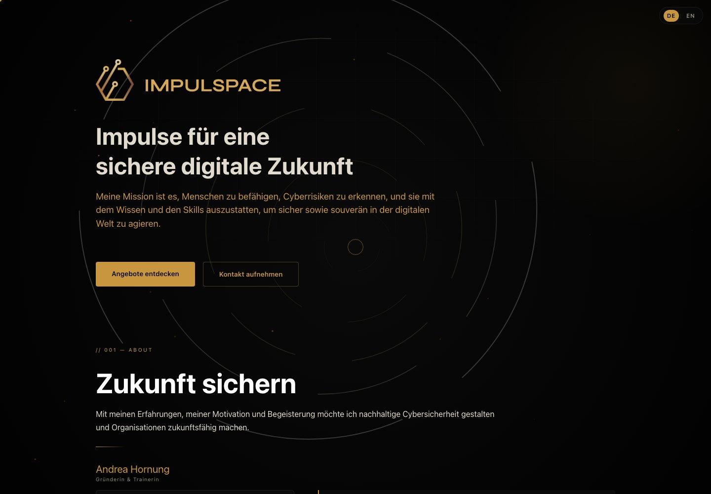

DARMbalance
GesundheitsbegleitungEine persönliche Website, die ein erklärungsbedürftiges Angebot zugänglich macht.
Ich bin Gregory Schenk. Ich entwickle Websites für Menschen und Unternehmen, die etwas zu zeigen haben — mit Neugier, technischem Verständnis und KI-Unterstützung.

DARMbalance · Gesundheitsbegleitung
IMPULSPACE · Training & VorträgeEin Ausschnitt aus meinen bisherigen Arbeiten.
Eine Website beginnt mit dem, was dich ausmacht.
Idee verstehen. Richtung finden. Gemeinsam umsetzen.
Verschiedene Menschen und Unternehmen. Jeweils eine eigene Sprache im Web.
Eine persönliche Website, die ein erklärungsbedürftiges Angebot zugänglich macht.
Person, Fachwissen und unterschiedliche Formate für eine sichere digitale Zukunft.
Ein Meisterlabor. Drei Perspektiven: Patienten, Praxen und Menschen, die dort arbeiten möchten.
Projektansichten aus dem lokalen Entwicklungsstand.
Ein Kennenlernspiel, das Menschen ins Gespräch bringt. Aus meiner Freude am Spielen wurde eine eigene Web-App.
Illustration des Spielprinzips
Ich bin Gregory, auch einfach Greg. Mein Weg führte mich von der Arbeit mit Kindern und Jugendlichen über die Wirtschaftsinformatik zur IT-Sicherheit. Mich interessiert bis heute beides: Menschen verstehen und Technik sinnvoll einsetzen.
Ich begeistere mich für Brettspiele, Sport und KI. Neue Ideen bleiben bei mir selten nur Ideen — ich möchte sie ausprobieren und sehen, was daraus werden kann.
Ich verfolge neue Entwicklungen und erstelle Websites mit KI-Unterstützung. Sie hilft mir beim Ausprobieren und Umsetzen. Ich entscheide, was zum Projekt passt, und prüfe das Ergebnis.
Was machst du? Wen möchtest du erreichen? Und was sollen Menschen auf deiner Website finden? Damit beginnt unser Gespräch.
Aus den Antworten entstehen Struktur, Textideen und erste visuelle Entwürfe. Wir schauen gemeinsam, welcher Auftritt zu dir passt.
Ich entwickle die ausgewählte Richtung mit KI-Unterstützung weiter. Wir sehen uns Inhalte, Bedienung und Darstellung auf verschiedenen Bildschirmgrößen an.
Dein Unternehmen, dein Angebot oder eine Idee, die endlich eine Website bekommen soll. Erzähle mir davon.